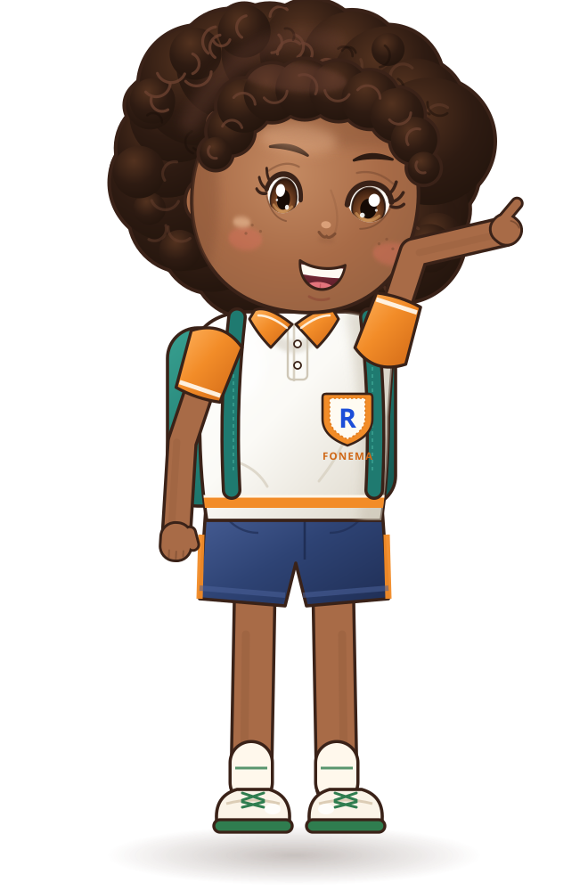

Termômetro da leitura
Nível 6 de 10
faltam 4 níveis
Encontros e casos especiais. A Iris já lê palavras com pr, bl, tr e está aprendendo quando o r soa forte, como em carro.
Chegada prevista ao nível 10: entre 4 e 7 meses. É uma faixa recalculada toda semana, não uma promessa.
Recado da Prof.ª Helena · “A Iris está lendo com muita vontade! Esta semana vamos treinar o R forte com pares como caro/carro. Em casa, a missão ao lado ajuda muito.”
Além da leitura, esta semana a Iris…
🧩ordenou 4 passos para o robô da vila chegar à horta;
🪙guardou moedinhas para comprar o regador da horta;
💬disse como se sentiu ao errar e tentou de novo.
O caminho da Iris só ela com ela mesma
O que a Iris já sabe esta semana
ESTÁ APRENDENDO
Palavras que a Iris leu esta semana sozinha, no app
Missão da semana 5 min · sem tela
Caça-palavras com R forte nos rótulos da cozinha.
1Peguem 3 embalagens (arroz, sabonete, macarrão).
2A Iris procura rr ou r no começo e lê em voz alta.
3Batam palma no som forte. Errou? Leiam juntas de novo.

Academia FONEMA vídeo da semana para a família

Por que o r
muda de som?
legenda · Libras1:40muda de som?
Ler junto em 5 min2:10 · família
Como elogiar o esforço1:30 · família
Dias de leitura não é sequência: nada se perde
Aqui a Iris só é comparada com ela mesma. O FONEMA não mostra ranking, nota de outras crianças nem percentil.